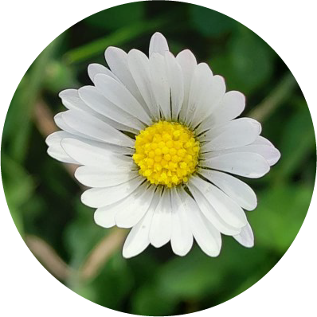

Larga vida a las plantas
Pioneras en pistas de aterrizaje, maravillas evolutivas, todo lo que querías saber sobre las plantas

¿Por qué las plantas deberían considerarse los grandes seres vivos milenarios?
Conoce todo sobre estos verdes seres que reinan la Tierra desde el "silencio"
